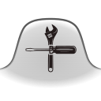

New Tab Tools
About
This add-on replaces you "new tab" page with what is essentially a clone of the new tab page from Firefox version 30. It also adds functionality for adding, modifying and hiding tiles, as well as a variety of customisations.
Releases
A new release is usually made about every two weeks. This could be earlier if a bug urgently needs fixing, or later if I'm busy with other things or no new changes are ready for release.
Released versions can be downloaded from https://addons.mozilla.org/firefox/addon/new-tab-tools/
How to report a problem
New Tab Tools' issue tracker is on GitHub. This is by far the best way to report an issue with New Tab Tools.
Localization
You might be here because you'd like to see New Tab Tools in your language. Great!
To translate, you can:
- Fork the Git repository, translate, and send me a pull request. Some knowledge of creating Mozilla add-ons is required.
Or, visit the project's page on Zoo, a website for add-on translation. (Please note that Zoo is under development, and could break at any time. It's mostly stable though.)
Contribute code
Want to add some functionality to New Tab Tools? Feel free to send me a pull request.
To get a working version of this repo in your Firefox profile, clone it into your extensions directory as newtabtools@darktrojan.net and start Firefox.
cd [your profile dir]/extensions git clone git://github.com/darktrojan/newtabtools.git newtabtools@darktrojan.net
Branches
Releases are made from the master branch. Previously there was an unreleased branch, but I've removed it.
Tags
Each version I upload to AMO is tagged with a version number. Some things tagged with a version number are not on AMO.
Contribute money
Add-ons are available for free, but developing and supporting them does take a considerable amount of time. Please consider making a donation to help me pay my bills. You can contribute any amount you like through PayPal. (Note though that for amounts smaller than about US$1, PayPal takes most of it.)
You can also send BitCoin if you prefer. See the same link for an address.